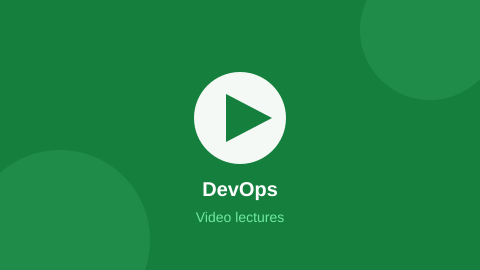

DevOps
Linux, Git, Docker, Kubernetes and CI/CD pipelines that ship code automatically.
Course Information
| Level | Intermediate |
|---|---|
| Duration | 12 weeks |
| Credits | 3 |
| Pre-requisite | Comfort with the Linux command line and Git basics. |
| Material | Open source — every module links to its original tutorial |
About This Track
DevOps is the practice of getting code from a laptop to a running server safely and repeatedly. In this track you package an application in a container, run it on a cluster, and set up a pipeline that tests and deploys it every time someone pushes to the main branch.
The syllabus follows the open roadmap.sh DevOps roadmap step by step. Concept notes come from GeeksforGeeks, and every tool is learned from its own free official documentation — Docker, Kubernetes and GitHub Actions all publish excellent open guides.
What You Will Learn
- Move around Linux confidently: files, permissions, processes, systemd, shell scripts
- Use Git branching strategies the way real teams do
- Write a Dockerfile and run multi-container apps with Docker Compose
- Deploy pods, services and deployments on Kubernetes
- Build a CI/CD pipeline with GitHub Actions or Jenkins
- Provision infrastructure as code with Terraform and monitor it with Prometheus and Grafana
Syllabus
| # | Module | Topics Covered | Weeks | Study Material |
|---|---|---|---|---|
| 1 | Linux & Shell Scripting | File system, permissions, pipes, grep/sed/awk, cron, bash scripts | 2 | Linux Journey |
| 2 | Git & Version Control | Branching, rebase, merge conflicts, tags, pull request workflow | 1 | W3Schools Git |
| 3 | Networking & Servers | DNS, HTTP, ports, SSH, Nginx, reverse proxy, TLS certificates | 2 | GfG Computer Networks |
| 4 | Docker | Images, layers, Dockerfile, volumes, networks, Docker Compose, registries | 2 | Docker Get Started |
| 5 | Kubernetes | Pods, deployments, services, ConfigMaps, secrets, scaling, Helm basics | 3 | Kubernetes Basics |
| 6 | CI/CD, IaC & Monitoring | GitHub Actions, Jenkins, Terraform, Ansible, Prometheus, Grafana | 2 | GitHub Actions Docs |
Code From The Lab
Sample from Module 4 — a Dockerfile for the Node app built in the Web Dev track
FROM node:20-alpine
WORKDIR /app
COPY package*.json ./
RUN npm ci --omit=dev
COPY . .
EXPOSE 3000
CMD ["node", "server.js"]
# Build and run it:
# docker build -t pupil-api .
# docker run -p 3000:3000 pupil-apiVideo Lectures
Click the thumbnail to open the video playlist for this track:

Recorded College Session
Video Playlists
- TechWorld with Nana — Docker, Kubernetes and full DevOps bootcamp videos
- freeCodeCamp.org — Long form Linux, Docker, Kubernetes and Terraform courses
- DevOps lecture search — More open lectures and college workshops on DevOps
Open Source Study Material
These are the exact open sources the notes for this track are prepared from.
| Source | Best Used For | Link |
|---|---|---|
| roadmap.sh | The DevOps roadmap this syllabus is built on — tick topics as you finish | Open |
| GeeksforGeeks | DevOps tutorial covering culture, tools and interview questions | Open |
| Docker Documentation | Official guide, from first container to Compose | Open |
| Kubernetes Docs | Interactive tutorials that run a cluster in your browser | Open |
| Stack Overflow | The docker and kubernetes tags for real deployment errors | Open |
| W3Schools | Quick Git and Bash revision before the lab exam | Open |
Lab Projects
- Containerise your Web Dev project and push the image to Docker Hub
- GitHub Actions pipeline that runs tests and deploys on every push
- Three-tier app running on a local Kubernetes cluster (minikube or kind)
- Terraform script that creates a free-tier cloud VM from scratch
Your Progress
Modules finished in this track:
0 of 6
Self rated confidence: